import BigKindsParser as bkp
import numpy as np
import pandas as pd
import matplotlib.pyplot as plt
import seaborn as sns
from wordcloud import WordCloud
import warnings
warnings.filterwarnings("ignore")
plt.rcParams["font.family"] = "Malgun Gothic"
plt.rcParams['figure.figsize'] = 10,10
sns.set(font="Malgun Gothic", rc={"axes.unicode_minus":False}, style='white')
df = pd.read_excel('./data/econo_columns_20170510-20220509.xlsx', engine = "openpyxl")2 Clustering analysis을 중심으로
2.1 개요
본 내용은 칼럼 데이터에 문서 군집 분석 진행한 보고서이다.
분석 언어는 Python을 사용했으며, 가장 보편적인 군집 분석 방법인 K-Means Clusteringdmf 사용했다. 알고리즘은 Scikit-Learn의 KMeans() 함수를 활용하여 분석을 진행했다.
군집 분석에 앞서 EDA를 먼저 진행하였다.
2.2 EDA
먼저 언론사 별 칼럼 보도 빈도를 확인하였다. 빈도 분석은 필자가 직접 제작한 라이브러리 ’BigKindsParser’의 press_counter 함수를 활용했다.
df_key = bkp.press_counter(df)
sns.barplot(data = df_key, x = '기사', y = '언론사')
plt.figure(facecolor = 'white')
plt.show()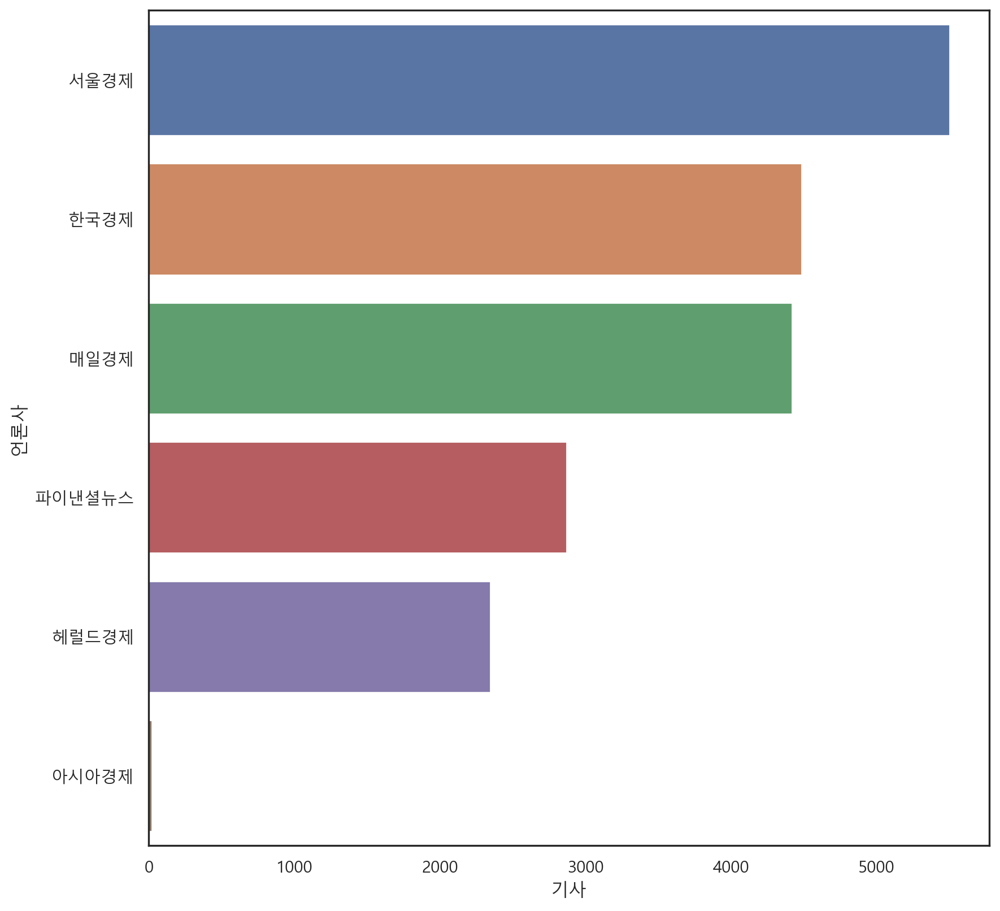
<Figure size 960x960 with 0 Axes>2.3 키워드 빈도
언론사 빈도 분석에 이어 단어 빈도 분석을 진행하였다. 시각화는 워드클라우드로 진행하였으며, 분석 알고리즘은 BigKindsParser를 통해 진행했다.
keywords = bkp.keywords_list(df)
news_key = bkp.keyword_parser(keywords)
news_key = bkp.duplication_remover(news_key)
key = bkp.word_counter(news_key)
news_key = bkp.counter_to_DataFrame(key)
wc = WordCloud(font_path='malgun',
width = 500,
height = 500,
background_color='white').generate_from_frequencies(news_key.set_index('단어').to_dict()["빈도"])
plt.figure(figsize = (10, 10))
plt.imshow(wc)
plt.axis('off')
plt.show()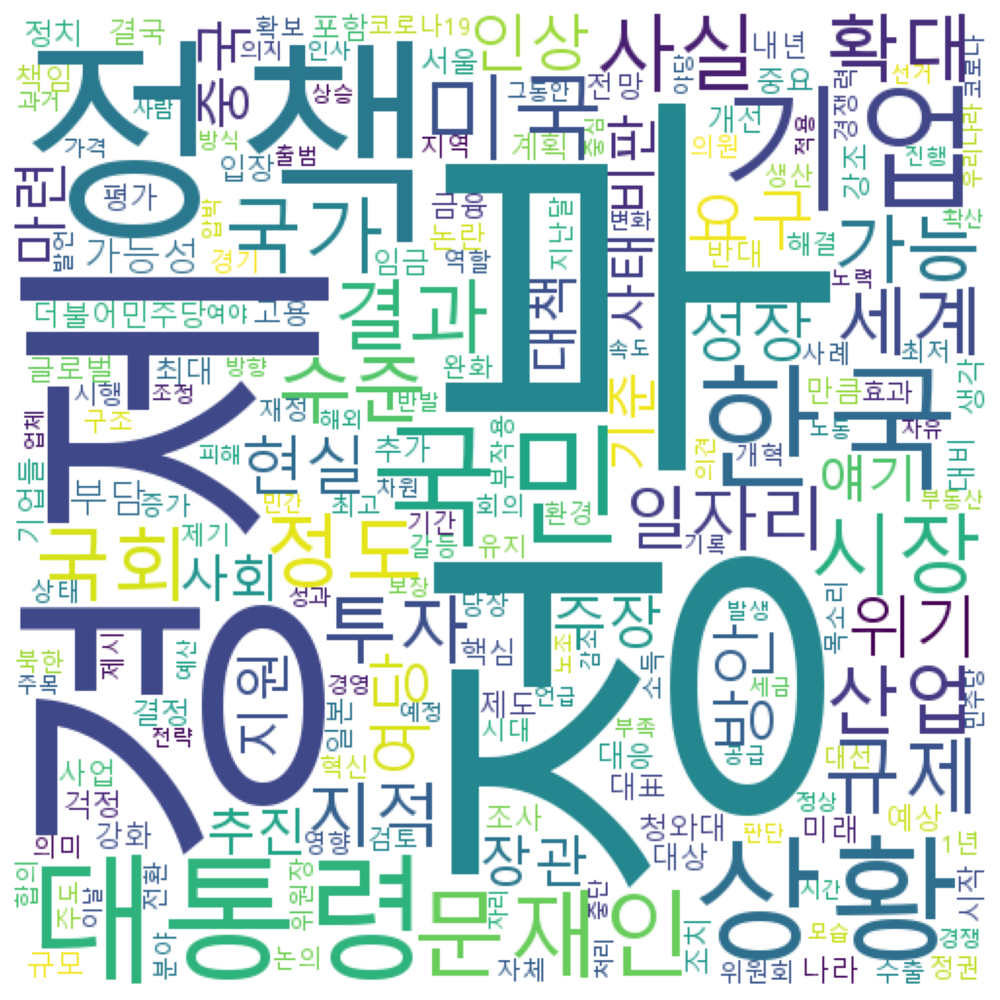
2.4 언론사 별 키워드 분석
더 자세한 분석을 위해 언론사 별로 나눈 키워드 분석도 진행했다.
2.4.1 언론사별 키워드 분석 –> 한경
bkp.keywords_wordcloud(df, '한국경제')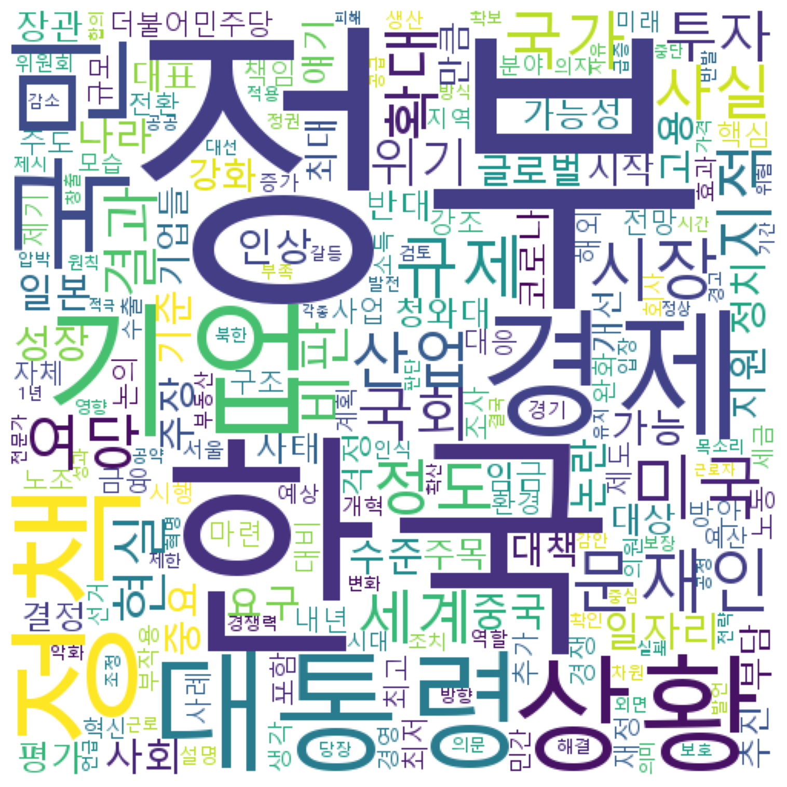
2.4.2 언론사별 키워드 분석 –> 매경
bkp.keywords_wordcloud(df, '매일경제')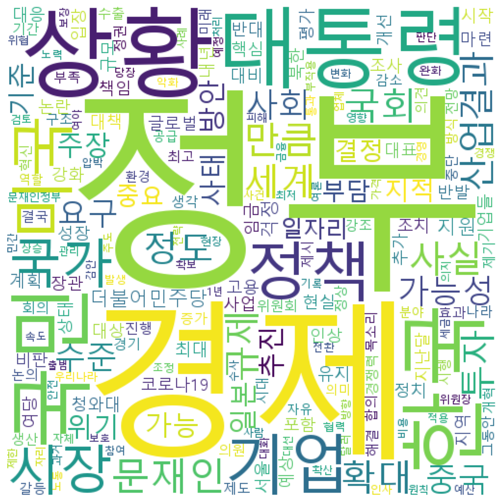
2.4.3 언론사별 키워드 분석 –> 서경
bkp.keywords_wordcloud(df, '서울경제')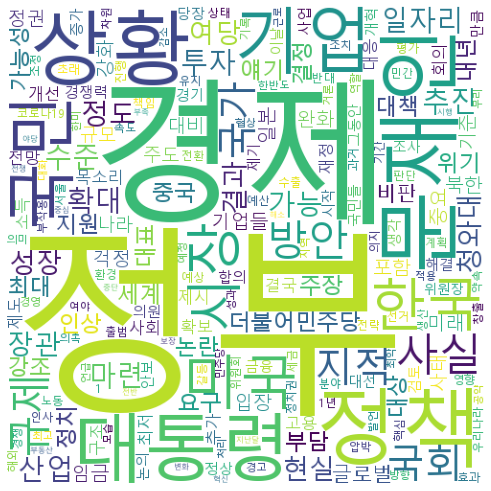
2.4.4 언론사별 키워드 분석 –> 파이낸셜
bkp.keywords_wordcloud(df, '파이낸셜뉴스')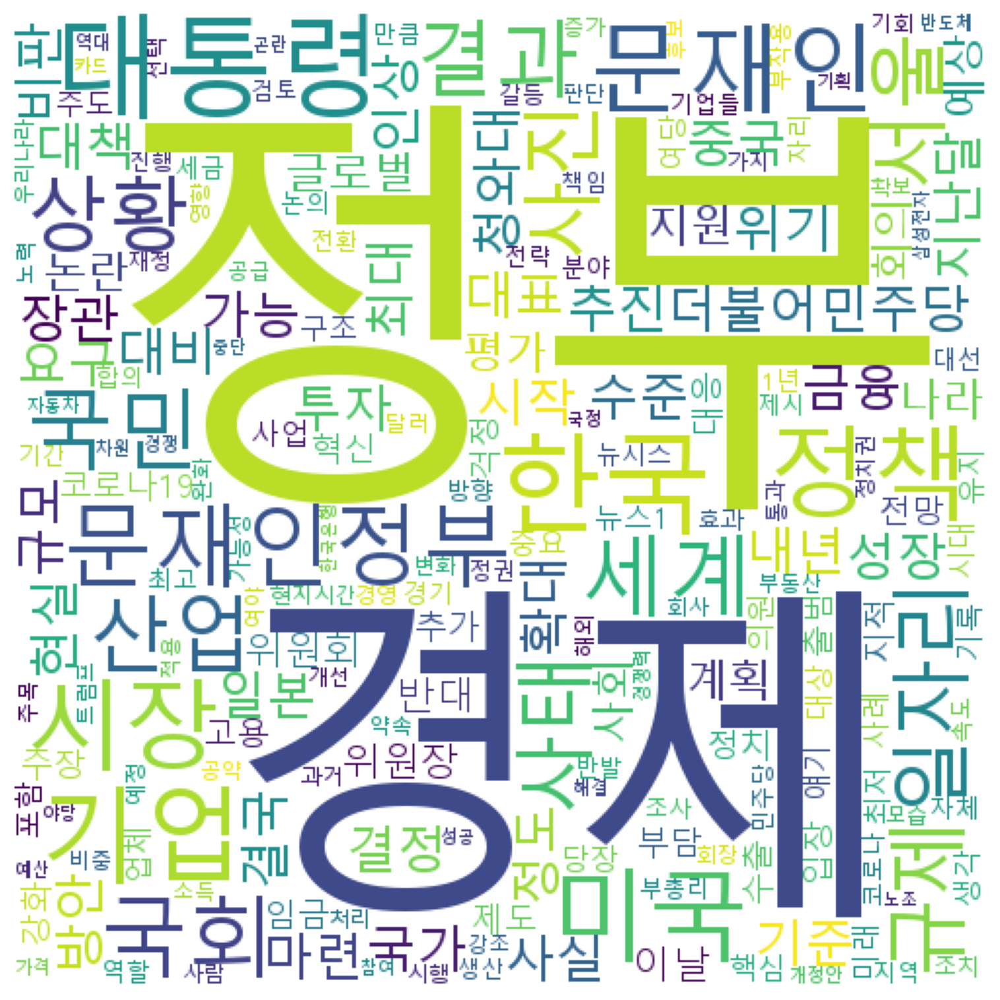
2.4.5 언론사별 키워드 분석 –> 헤럴드
bkp.keywords_wordcloud(df, '헤럴드경제')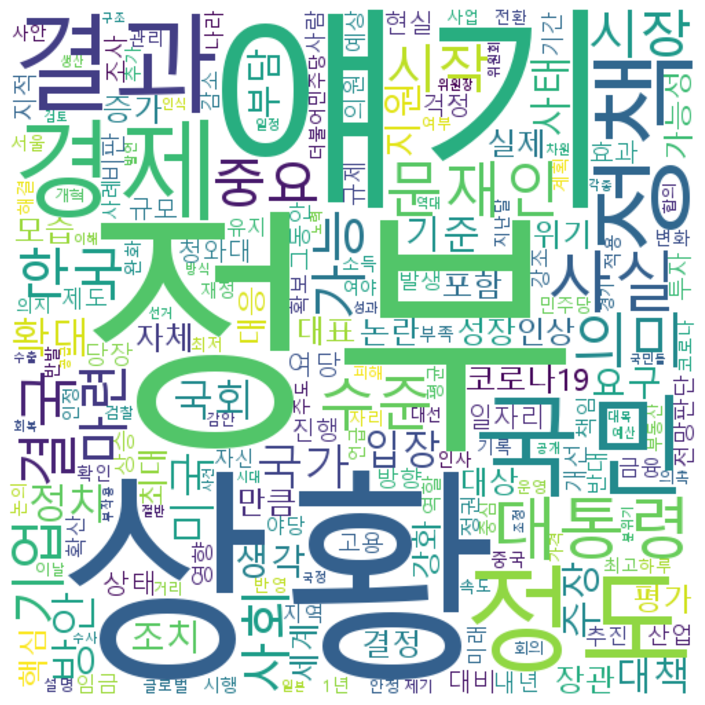
2.5 TF-IDF 분석
언론사별 용어 빈도는 비슷하게 나온다는 점에서, 주류 단어가 아닌 언론사마다 특징적으로 사용한 단어를 추출하기 위해 상대 빈도 분석을 진행하였다.
상대 빈도 분석 방법은 tf-idf으로 진행하였다.
from sklearn.feature_extraction.text import TfidfVectorizer 2.5.1 언론사별 상대 빈도 분석 –> 한경
han_words = df[df['언론사'] == '한국경제']
han_words = han_words['키워드']
tfidf = TfidfVectorizer()
tdm = tfidf.fit_transform(han_words)
word_count1 = pd.DataFrame({
'단어': tfidf.get_feature_names_out(),
'빈도': tdm.sum(axis=0).flat
}).sort_values('빈도', ascending = False).reset_index(drop = True)
wc = WordCloud(font_path = 'malgun',
width = 500,
height = 500,
background_color='white').generate_from_frequencies(word_count1.set_index('단어').to_dict()["빈도"])
plt.figure(figsize = (10, 10))
plt.imshow(wc)
plt.axis('off')
plt.show()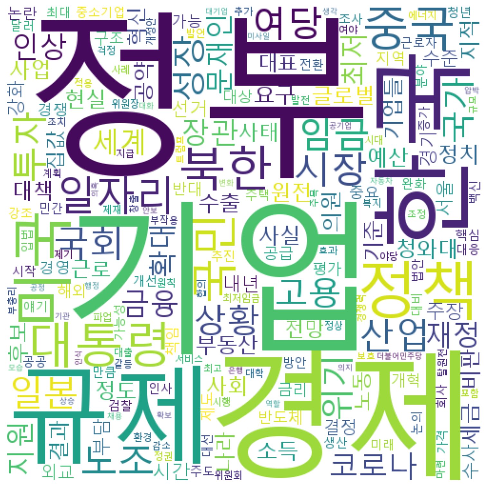
2.5.2 언론사별 상대 빈도 분석 –> 매경
mail_words = df[df['언론사'] == '매일경제']
mail_words = mail_words['키워드']
tfidf = TfidfVectorizer()
tdm = tfidf.fit_transform(mail_words)
word_count2 = pd.DataFrame({
'단어': tfidf.get_feature_names_out(),
'빈도': tdm.sum(axis=0).flat
}).sort_values('빈도', ascending = False).reset_index(drop = True)
wc = WordCloud(font_path = 'malgun',
width = 500,
height = 500,
background_color='white').generate_from_frequencies(word_count2.set_index('단어').to_dict()["빈도"])
plt.figure(figsize = (10, 10))
plt.imshow(wc)
plt.axis('off')
plt.show()2.5.3 언론사별 상대 빈도 분석 –> 서경
seo_words = df[df['언론사'] == '서울경제']
seo_words = seo_words['키워드']
tfidf = TfidfVectorizer()
tdm = tfidf.fit_transform(seo_words)
word_count3 = pd.DataFrame({
'단어': tfidf.get_feature_names_out(),
'빈도': tdm.sum(axis=0).flat
}).sort_values('빈도', ascending = False).reset_index(drop = True)
wc = WordCloud(font_path = 'malgun',
width = 500,
height = 500,
background_color='white').generate_from_frequencies(word_count3.set_index('단어').to_dict()["빈도"])
plt.figure(figsize = (10, 10))
plt.imshow(wc)
plt.axis('off')
plt.show()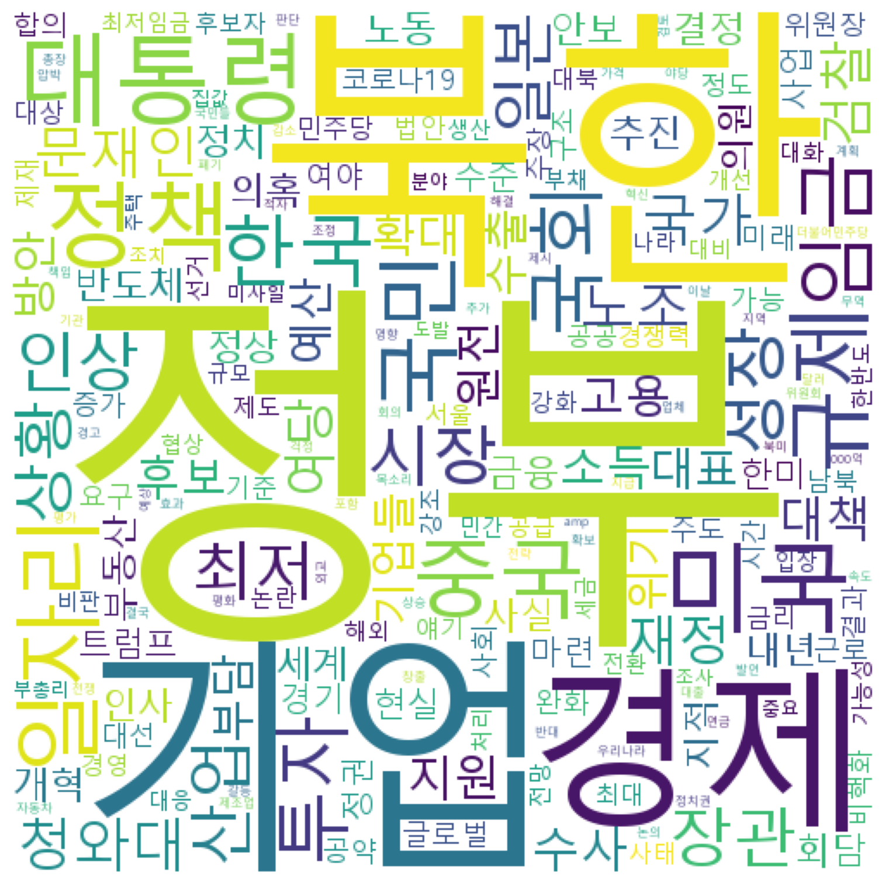
2.5.4 언론사별 상대 빈도 분석 –> 파이낸셜
fin_words = df[df['언론사'] == '파이낸셜뉴스']
fin_words = fin_words['키워드']
tfidf = TfidfVectorizer()
tdm = tfidf.fit_transform(fin_words)
word_count4 = pd.DataFrame({
'단어': tfidf.get_feature_names_out(),
'빈도': tdm.sum(axis=0).flat
}).sort_values('빈도', ascending = False).reset_index(drop = True)
wc = WordCloud(font_path = 'malgun',
width = 500,
height = 500,
background_color='white').generate_from_frequencies(word_count4.set_index('단어').to_dict()["빈도"])
plt.figure(figsize = (10, 10))
plt.imshow(wc)
plt.axis('off')
plt.show()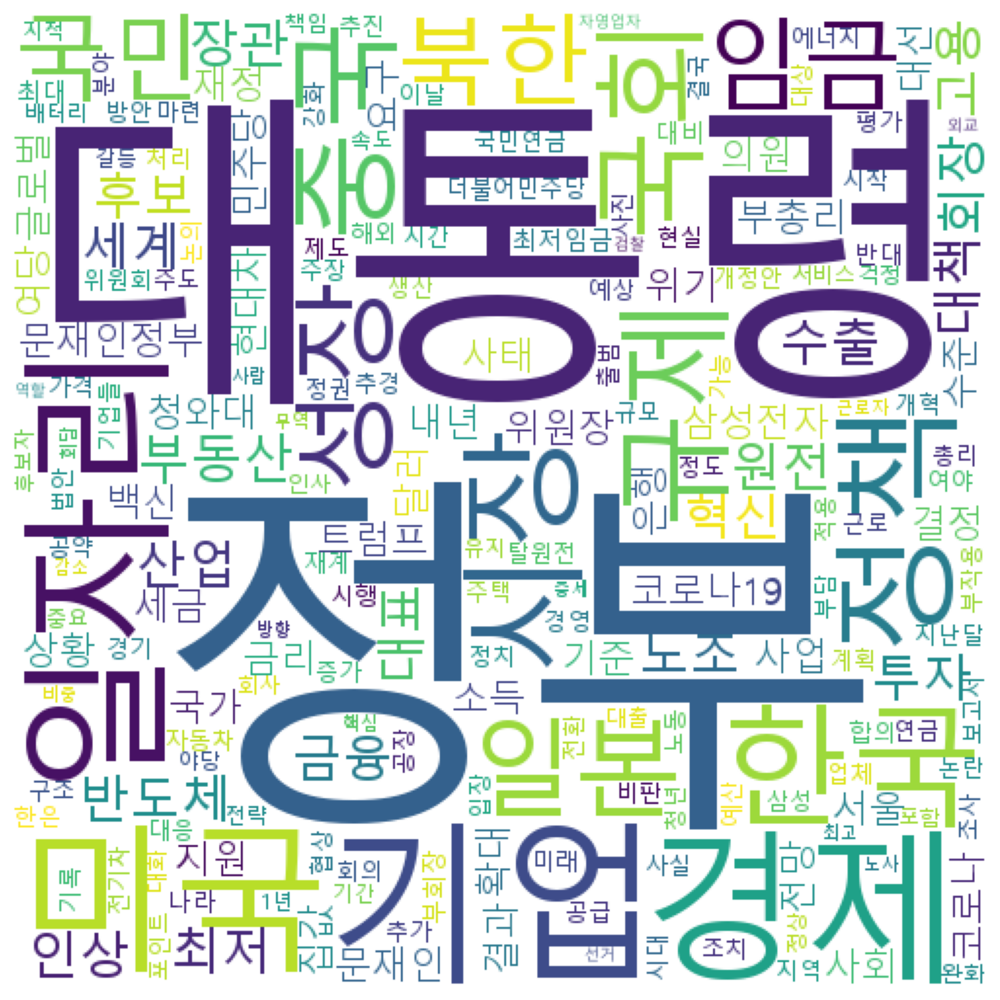
2.5.5 언론사별 상대 빈도 분석 –> 헤럴드
hero_words = df[df['언론사'] == '헤럴드경제']
hero_words = hero_words['키워드']
tfidf = TfidfVectorizer()
tdm = tfidf.fit_transform(hero_words)
word_count5 = pd.DataFrame({
'단어': tfidf.get_feature_names_out(),
'빈도': tdm.sum(axis=0).flat
}).sort_values('빈도', ascending = False).reset_index(drop = True)
wc = WordCloud(font_path = 'malgun',
width = 500,
height = 500,
background_color='white').generate_from_frequencies(word_count5.set_index('단어').to_dict()["빈도"])
plt.figure(figsize = (10, 10))
plt.imshow(wc)
plt.axis('off')
plt.show()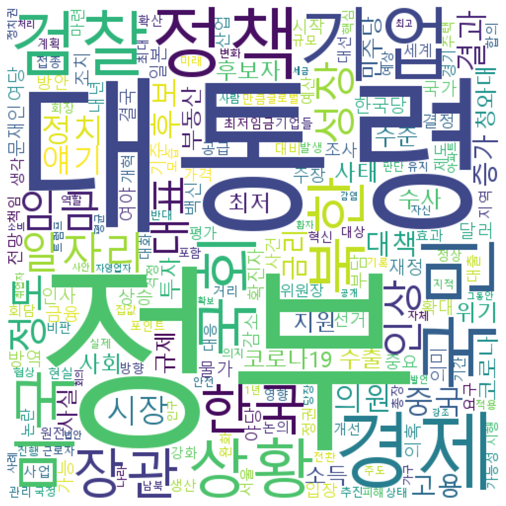
2.5.6 상대 빈도 별 순위 시각화
각 언론사 별 상대 빈도 순위를 비교한 값은 다음과 같다.
words_df1 = pd.concat([word_count1, word_count2], join='outer', axis=1)
words_df1.columns = ['단어(한경)', '빈도(한경)', '단어(매경)', '빈도(매경)']
words_df2 = pd.concat([word_count3, word_count4, word_count5], join='outer', axis=1)
words_df2.columns = ['단어(서경)', '빈도(서경)','단어(파이낸셜)', '빈도(파이낸셜)','단어(헤럴드)', '빈도(헤럴드)']
words_df = pd.concat([words_df1, words_df2], join = 'outer', axis = 1)
words_df.head(20)| 단어(한경) | 빈도(한경) | 단어(매경) | 빈도(매경) | 단어(서경) | 빈도(서경) | 단어(파이낸셜) | 빈도(파이낸셜) | 단어(헤럴드) | 빈도(헤럴드) | |
|---|---|---|---|---|---|---|---|---|---|---|
| 0 | 정부 | 170.874039 | 정부 | 127.335164 | 정부 | 207.973736 | 정부 | 96.774121 | 정부 | 68.249231 |
| 1 | 기업 | 143.353837 | 기업 | 110.468213 | 북한 | 153.504708 | 대통령 | 78.668422 | 대통령 | 55.984063 |
| 2 | 경제 | 109.593958 | 대통령 | 105.349634 | 기업 | 147.576313 | 기업 | 73.745679 | 경제 | 47.226472 |
| 3 | 규제 | 99.747167 | 경제 | 98.987800 | 경제 | 141.483724 | 경제 | 66.228374 | 국민 | 43.421289 |
| 4 | 한국 | 96.602629 | 북한 | 94.959321 | 대통령 | 136.803875 | 미국 | 60.756488 | 기업 | 43.096729 |
| 5 | 정책 | 95.039328 | 미국 | 93.682823 | 정책 | 125.951686 | 일자리 | 58.554333 | 정책 | 41.426563 |
| 6 | 미국 | 90.302124 | 중국 | 87.481722 | 미국 | 125.941853 | 한국 | 57.845017 | 검찰 | 36.136012 |
| 7 | 대통령 | 89.964928 | 한국 | 86.394644 | 일자리 | 108.601917 | 정책 | 53.730281 | 상황 | 35.747487 |
| 8 | 북한 | 86.210303 | 정책 | 76.064262 | 중국 | 104.657793 | 시장 | 51.787001 | 미국 | 34.320186 |
| 9 | 중국 | 83.305281 | 국민 | 73.182543 | 규제 | 100.005150 | 규제 | 45.949896 | 국회 | 33.419709 |
| 10 | 국민 | 79.407091 | 규제 | 68.673798 | 국민 | 97.847511 | 국회 | 43.571681 | 북한 | 32.206295 |
| 11 | 일자리 | 79.164376 | 국회 | 64.407326 | 임금 | 88.199132 | 중국 | 42.673492 | 장관 | 32.127931 |
| 12 | 시장 | 68.216227 | 시장 | 63.713174 | 한국 | 84.390802 | 일본 | 40.091627 | 한국 | 31.377541 |
| 13 | 노조 | 67.212984 | 투자 | 61.656313 | 국회 | 83.832130 | 성장 | 39.962075 | 일자리 | 30.921592 |
| 14 | 여당 | 64.899902 | 일자리 | 60.358299 | 투자 | 81.507045 | 임금 | 39.627805 | 성장 | 30.897654 |
| 15 | 투자 | 64.160446 | 임금 | 59.657628 | 시장 | 80.210144 | 북한 | 39.523417 | 임금 | 30.480363 |
| 16 | 임금 | 62.896762 | 일본 | 58.333997 | 성장 | 79.884542 | 국민 | 38.434493 | 대표 | 29.536249 |
| 17 | 산업 | 60.127337 | 성장 | 52.338215 | 장관 | 74.306424 | 부동산 | 35.483854 | 인상 | 28.477505 |
| 18 | 일본 | 58.510270 | 산업 | 52.099878 | 산업 | 73.267545 | 후보 | 34.080738 | 정도 | 28.369887 |
| 19 | 국회 | 58.063480 | 장관 | 51.585880 | 인상 | 73.013147 | 반도체 | 33.821207 | 정치 | 27.913461 |
2.6 Dimension Reduction
본격적인 군집 분석에 앞서, 데이터의 분포를 확인하고자 차원 축소를 진행하였다.
차원 축소 진행을 위해 먼저 데이터 벡터화를 진행하였다.
다만, 모든 데이터를 전부 넣을 경우, 컴퓨터가 연산량을 이기지 못하고 다운되는 경우가 재현되어, 데이터는 2020년 이후의 데이터로만 분석을 진행하였다.
전체 데이터에 대한 분석은 2편의 토픽 모델링에서 진행하였다.
def targeting(x):
if x == '한국경제':
return 0
elif x == '매일경제':
return 1
elif x == '서울경제':
return 2
elif x == '파이낸셜뉴스':
return 3
elif x == '헤럴드경제':
return 4
elif x == '아시아경제':
return 5
df['target'] = df['언론사'].apply(lambda x : targeting(x))
df20 = df[df['일자'] >= 20200100]
df10 = df[df['일자'] < 20200100]
text20 = df20['키워드']
text20_df = df20[['언론사', '제목']]가장 먼저 차원 축소 방법론인 PCA(Principle Component Analysis)를 사용하였다. 해당 방법을 통해 데이터를 2차원으로 축소하였다.
from sklearn.feature_extraction.text import CountVectorizer, TfidfTransformer
from sklearn.decomposition import PCA
from sklearn.pipeline import Pipeline
pipeline = Pipeline([
('vect', CountVectorizer()),
('tfidf', TfidfTransformer()),
])
vec = pipeline.fit_transform(text20).toarray()
pca_df = PCA(n_components=2).fit_transform(vec)
pca_df = pd.DataFrame(pca_df, columns = ['component 0', 'component 1'])시각화 결과는 다음과 같다.
pca_df['target'] = df['target']
pca_0 = pca_df[pca_df['target'] == 0]
pca_1 = pca_df[pca_df['target'] == 1]
pca_2 = pca_df[pca_df['target'] == 2]
pca_3 = pca_df[pca_df['target'] == 3]
pca_4 = pca_df[pca_df['target'] == 4]
pca_5 = pca_df[pca_df['target'] == 5]
plt.scatter(pca_0['component 0'], pca_0['component 1'], color = 'blue', label = '한국경제')
plt.scatter(pca_1['component 0'], pca_1['component 1'], color = 'orange', label = '매일경제')
plt.scatter(pca_2['component 0'], pca_2['component 1'], color = 'green', label = '서울경제')
plt.scatter(pca_3['component 0'], pca_3['component 1'], color = 'yellow', label = '파이낸셜')
plt.scatter(pca_4['component 0'], pca_4['component 1'], color = 'pink', label = '헤럴드')
plt.scatter(pca_5['component 0'], pca_5['component 1'], color = 'purple', label = '아시아경제')
plt.xlabel('component 0')
plt.ylabel('component 1')
plt.legend()
plt.show()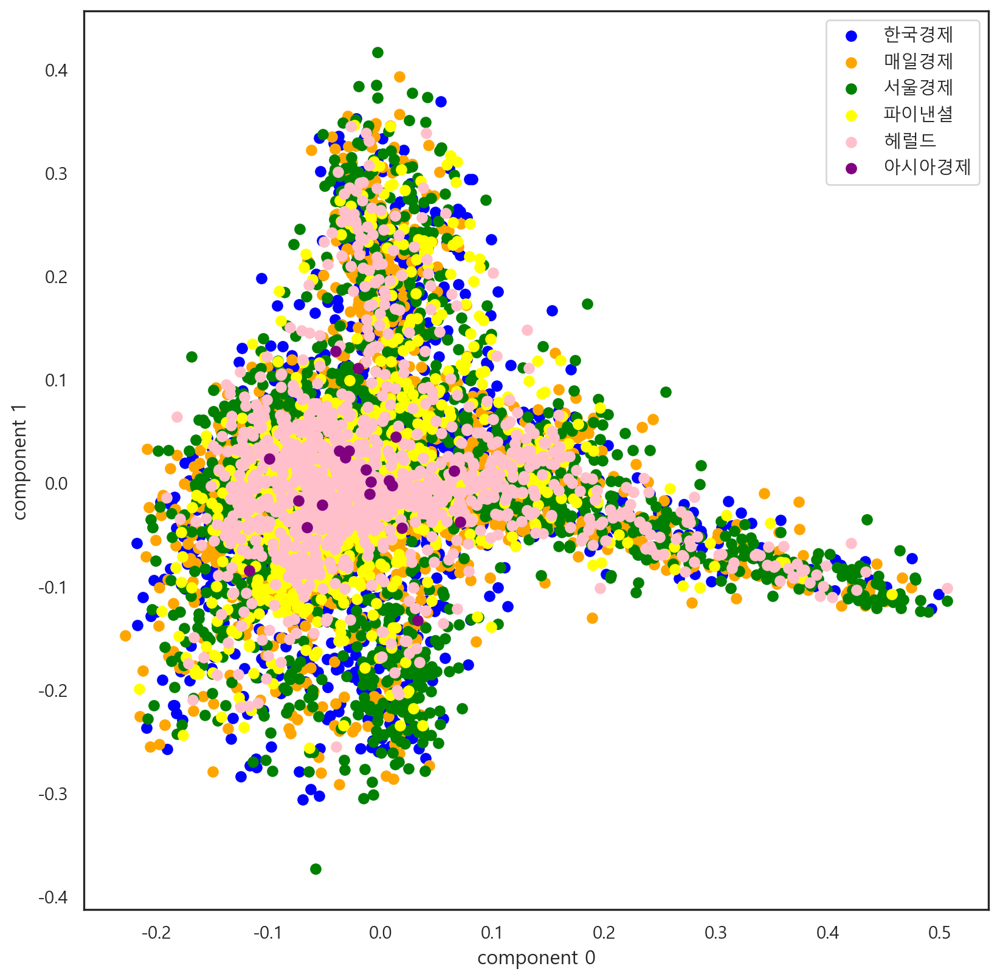
추가로 흝어진 정도를 파악하기 위해 T-SNE 방법을 사용했다.
from sklearn.manifold import TSNE
tsne = TSNE(n_components=2, learning_rate=400).fit_transform(vec)
tsne_df = pd.DataFrame(tsne, columns = ['component 0', 'component 1'])시각화 결과는 다음과 같다.
tsne_df['target'] = df['target']
tsne_0 = tsne_df[tsne_df['target'] == 0]
tsne_1 = tsne_df[tsne_df['target'] == 1]
tsne_2 = tsne_df[tsne_df['target'] == 2]
tsne_3 = tsne_df[tsne_df['target'] == 3]
tsne_4 = tsne_df[tsne_df['target'] == 4]
tsne_5 = tsne_df[tsne_df['target'] == 5]
plt.scatter(tsne_0['component 0'], tsne_0['component 1'], color = 'blue', label = '한국경제')
plt.scatter(tsne_1['component 0'], tsne_1['component 1'], color = 'orange', label = '매일경제')
plt.scatter(tsne_2['component 0'], tsne_2['component 1'], color = 'green', label = '서울경제')
plt.scatter(tsne_3['component 0'], tsne_3['component 1'], color = 'yellow', label = '파이낸셜')
plt.scatter(tsne_4['component 0'], tsne_4['component 1'], color = 'pink', label = '헤럴드')
plt.scatter(tsne_5['component 0'], tsne_5['component 1'], color = 'purple', label = '아시아경제')
plt.xlabel('component 0')
plt.ylabel('component 1')
plt.legend()
plt.show()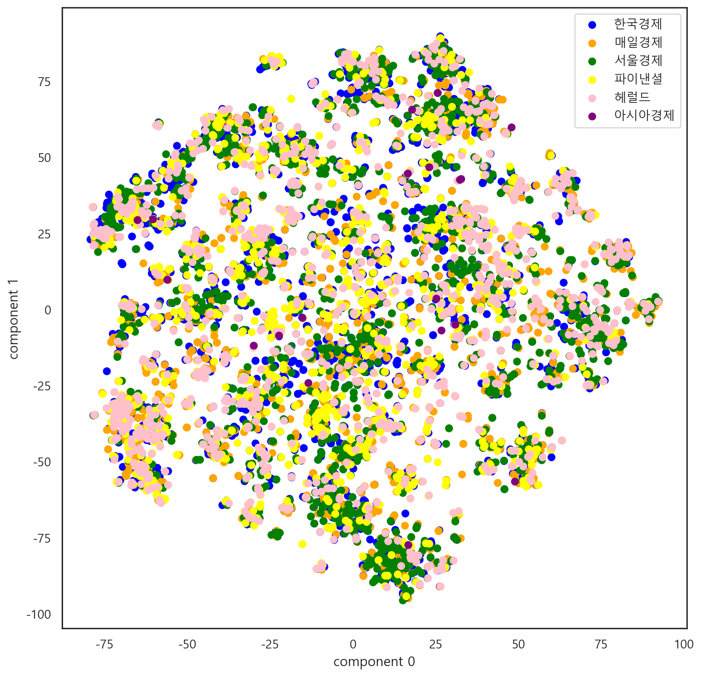
2.7 K-Means Clustering
본격적으로 군집 분석에 들어가기 앞서, K-Means는 최적 군집 갯수를 정해줘야 한다.
최적 군집 갯수 추론을 위해 Elbow Method를 사용하였다.
from sklearn.cluster import KMeans
from yellowbrick.cluster import KElbowVisualizer
vzr = KElbowVisualizer(KMeans(), k=(2, 20))
vzr.fit(pca_df)
vzr.poof()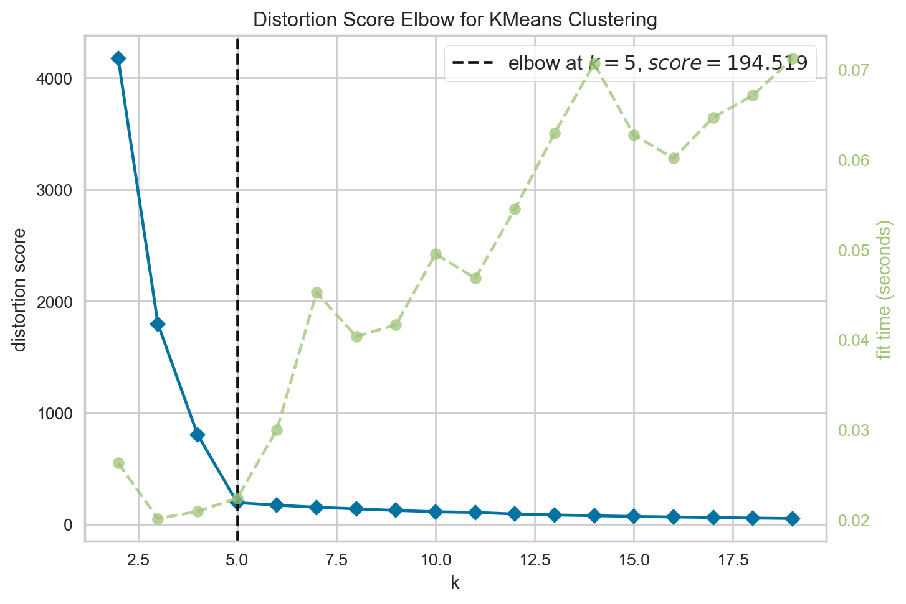
<Axes: title={'center': 'Distortion Score Elbow for KMeans Clustering'}, xlabel='k', ylabel='distortion score'>분석 결과, 최적 토픽 갯수는 5개로 나타났다.
해당 5개의 군집 분석 결과를 확인하기 위해 Silhouette Score 분석을 진행하였다. 분석 최적화를 위해 정규화도 진행하였다.
from sklearn.preprocessing import Normalizer
nor = Normalizer()
vec_nor = nor.fit_transform(vec)from yellowbrick.cluster import SilhouetteVisualizer
kmeans= KMeans(n_clusters=5, max_iter=1000, random_state=0) #최적 Topic 개수 5개를 기점으로 진행
visualizer = SilhouetteVisualizer(kmeans, colors='yellowbrick')visualizer.fit(vec_nor)
visualizer.show()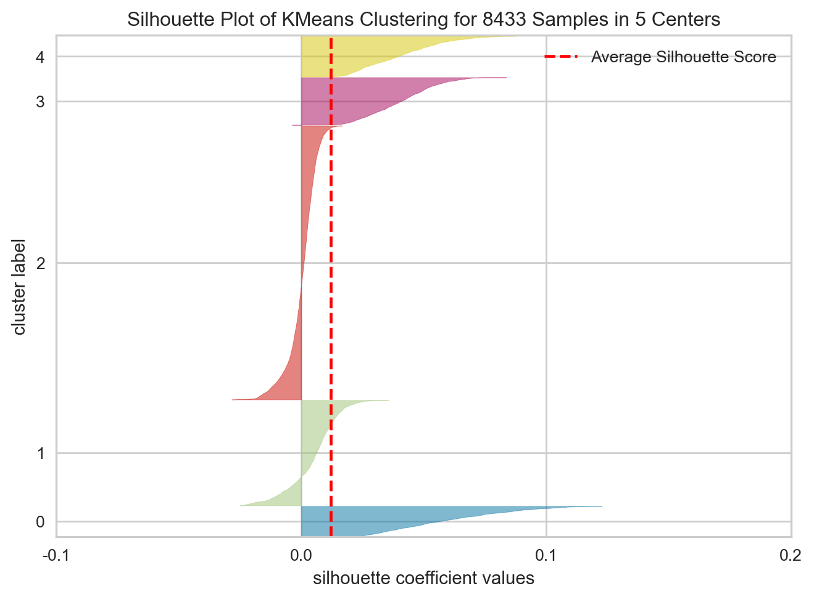
<Axes: title={'center': 'Silhouette Plot of KMeans Clustering for 8433 Samples in 5 Centers'}, xlabel='silhouette coefficient values', ylabel='cluster label'>생각보다 실루엣 계수가 많이 낮게 나타났다.
이러한 결과가 K-means 분석 모델의 결과가 안좋은 것인지, 텍스트 데이터 분석 방법론으로서 k-Means의 한계인 것인치는 확인이 필요해보인다.
K-Means 군집 별 기사 갯수는 다음과 같다.
kmeans.fit(vec_nor)
labels = kmeans.labels_
text20_df['군집'] = labels
text20_df.groupby('군집').size()군집
0 514
1 1784
2 4638
3 807
4 690
dtype: int64또한 이후 개별적으로 분석해낸 토픽의 양상은 다음과 같다.
0번 토픽 = 검찰 관련 칼럼
1번 토픽 = 총선 관련 칼럼
2번 토픽 = 경제 정책 관련 칼럼
3번 토픽 = 부동산 관련 칼럼
4번 토픽 = 북한 관련 칼럼
해당 결과를 토대로 PCA와 T-SNE를 진행한 결과는 다음과 같다.
2.7.1 PCA with K-means
pca_df['cluster'] = labels
pca_clu_0 = pca_df[pca_df['cluster'] == 0]
pca_clu_1 = pca_df[pca_df['cluster'] == 1]
pca_clu_2 = pca_df[pca_df['cluster'] == 2]
pca_clu_3 = pca_df[pca_df['cluster'] == 3]
pca_clu_4 = pca_df[pca_df['cluster'] == 4]
plt.scatter(pca_clu_0['component 0'], pca_clu_0['component 1'], color = 'blue', label = '부동산')
plt.scatter(pca_clu_1['component 0'], pca_clu_1['component 1'], color = 'orange', label = '코로나')
plt.scatter(pca_clu_2['component 0'], pca_clu_2['component 1'], color = 'green', label = '북한')
plt.scatter(pca_clu_3['component 0'], pca_clu_3['component 1'], color = 'purple', label = '경제 정책')
plt.scatter(pca_clu_4['component 0'], pca_clu_4['component 1'], color = 'red', label = '정치')
plt.xlabel('component 0')
plt.ylabel('component 1')
plt.legend()
plt.show()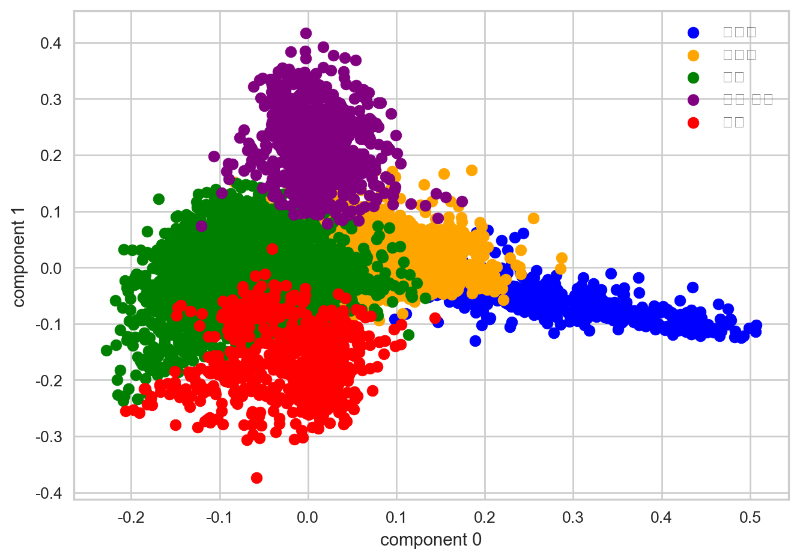
2.7.2 T-SNE with K-means
tsne_df['cluster'] = labels
tsne_clu0 = tsne_df[tsne_df['cluster'] == 0]
tsne_clu1 = tsne_df[tsne_df['cluster'] == 1]
tsne_clu2 = tsne_df[tsne_df['cluster'] == 2]
tsne_clu3 = tsne_df[tsne_df['cluster'] == 3]
tsne_clu4 = tsne_df[tsne_df['cluster'] == 4]
# target 별 시각화
plt.scatter(tsne_clu0['component 0'], tsne_clu0['component 1'], color = 'blue', label = '부동산')
plt.scatter(tsne_clu1['component 0'], tsne_clu1['component 1'], color = 'orange', label = '코로나')
plt.scatter(tsne_clu2['component 0'], tsne_clu2['component 1'], color = 'green', label = '북한')
plt.scatter(tsne_clu3['component 0'], tsne_clu3['component 1'], color = 'purple', label = '경제 정책')
plt.scatter(tsne_clu4['component 0'], tsne_clu4['component 1'], color = 'red', label = '정치')
plt.xlabel('component 0')
plt.ylabel('component 1')
plt.legend()
plt.show()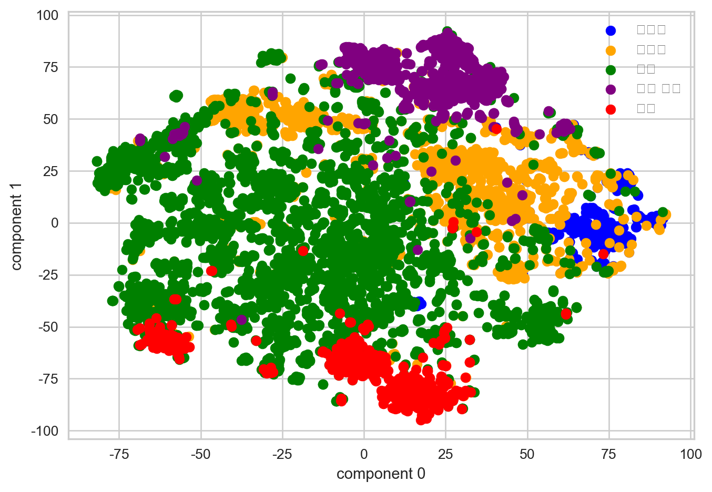